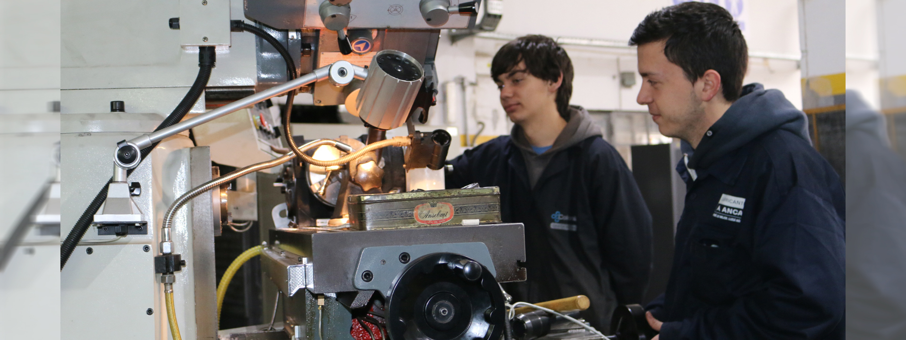
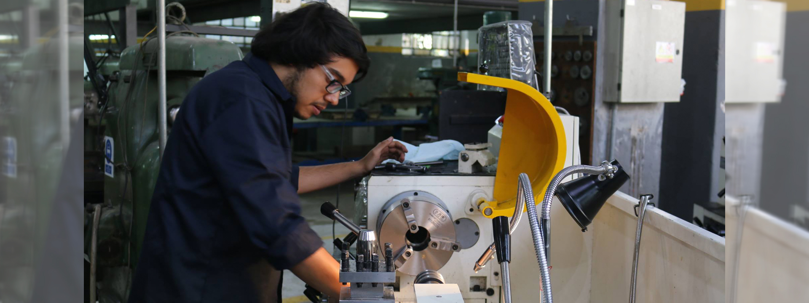

Fallas Principales
Fallas en el torno: Después del inicio del programa, el motor paso a paso no gira. Este fenómeno generalmente es causado por la falla de fase del motor paso a paso o su sistema de control. Puede haber un fallo del propio motor paso a paso o un fallo de su circuito de accionamiento.Primero, verifique que el contacto del motor paso a paso tenga un buen contacto. Si el enchufe del conector está en buen contacto, reemplace el motor monofásico sin falla.
Fallas Secundaras
Fallas en ejes sometidos a torsión La solicitación por torsión de cuerpos cilíndricos, tiene las siguientes características: Hay dos planos perpendiculares donde el esfuerzo de corte es máximo, uno longitudinal y otro trasversal Hay dos direcciones donde actúan los esfuerzos normales máximos y están a 45o de los planos de corte máximo.
Fallas Frecuentes
Fracturas por carga axial o fatiga térmica en tornillos o tuercas La fatiga térmica es el resultado de esfuerzos cíclicos causados por variación de temperatura. El daño produce grietas que pueden ocurrir con pequeñas deformaciones bajo carga térmica Con sus respectivas marcas características en fallas por fatiga en flexión rotativa Esto se soluciona cambiando la tuerca o tonillo
PLANOS